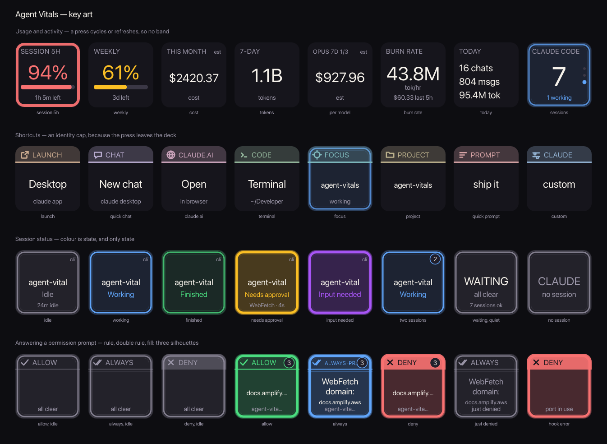
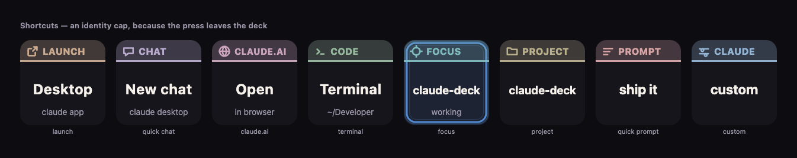

Agent Vitals — a Stream Deck plugin for Claude Code
Live Claude usage gauges, running Claude Code sessions, per-session status, and one-press approvals for permission prompts — on your Elgato Stream Deck. Windows and macOS, free and open source.

What it puts on your deck
Claude usage gauges
The same 5-hour and weekly limit percentages Claude Desktop and Claude Code's
/usage show, as a live ring with a reset countdown. Pulled with your existing
local Claude sign-in — no extra login.
Session status at a glance
How many Claude Code sessions are running and how many are busy, refreshed every 5 seconds. Per-session keys show Needs approval, Input needed, Working, Finished or Idle.
Approve from the deck
Allow, Always Allow and Deny keys mirror the three options Claude Code shows in the terminal. When a session asks for permission the keys light up with what's pending; press one and the prompt is answered.
Jump to the session that needs you
The Waiting key stays dark until a session is blocked on you, then names it and why. Press to bring that terminal window to the front; press again to cycle the rest.
Cost tracking without a subscription
On enterprise setups with no subscription limits (Azure AI Foundry, Bedrock, Vertex) the gauges switch to local spend for the same window, with optional per-model rates and a budget ring.
Quick-launch keys
Open Claude Desktop, fire the global quick-chat hotkey, start Claude Code in a specific project folder, or paste a canned prompt — one key each.
Install
Download dev.tapparello.agent-vitals.streamDeckPlugin from the
latest release and
double-click it. Stream Deck installs it and the actions appear under the
Agent Vitals category. You can also
build from source.
Requirements
- Windows 10+ or macOS 11+, with Stream Deck software 6.5 or newer
- Claude Code installed and signed in
- Claude Desktop (optional — only for the launcher and quick-chat keys)
- Live subscription percentages need a consumer Pro or Max account; other accounts get local spend instead
Privacy
Everything runs on your machine. The plugin reads your local Claude Code data and your existing sign-in token to call Anthropic's usage endpoint — nothing is sent anywhere else, and there is no analytics or telemetry. See the privacy notes and security notes.
